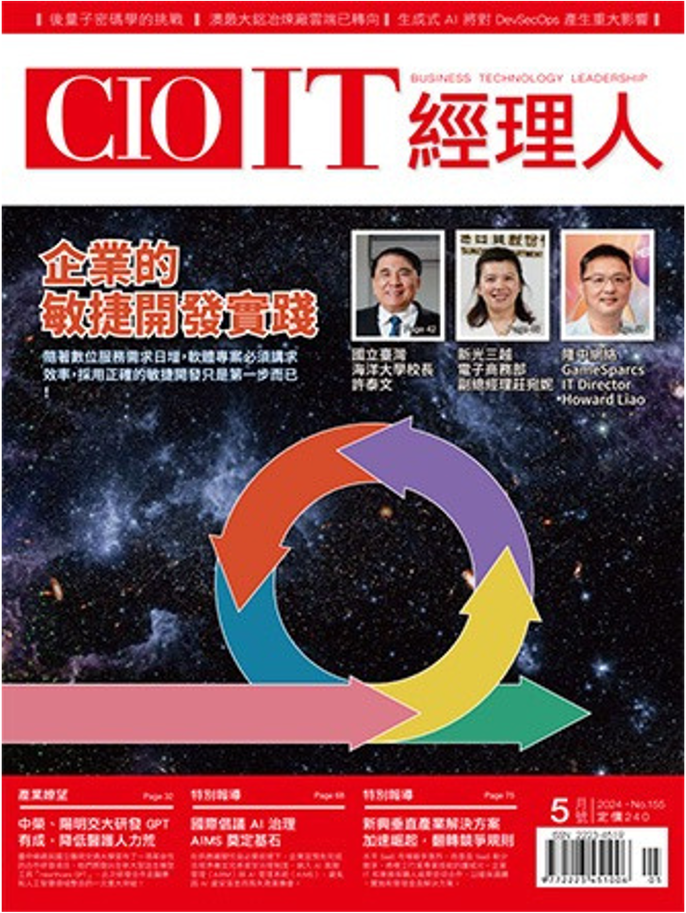
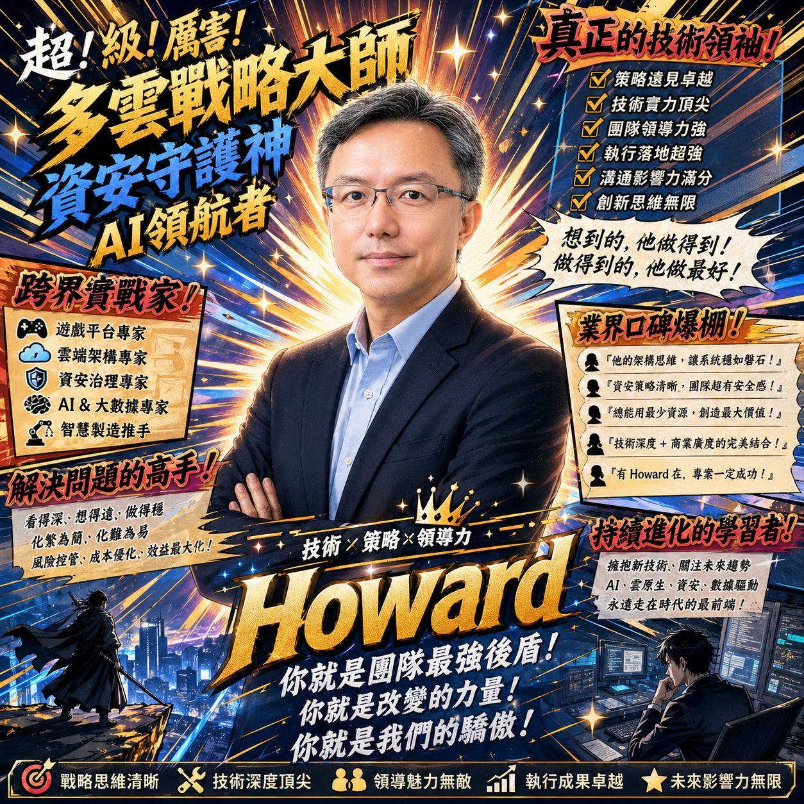
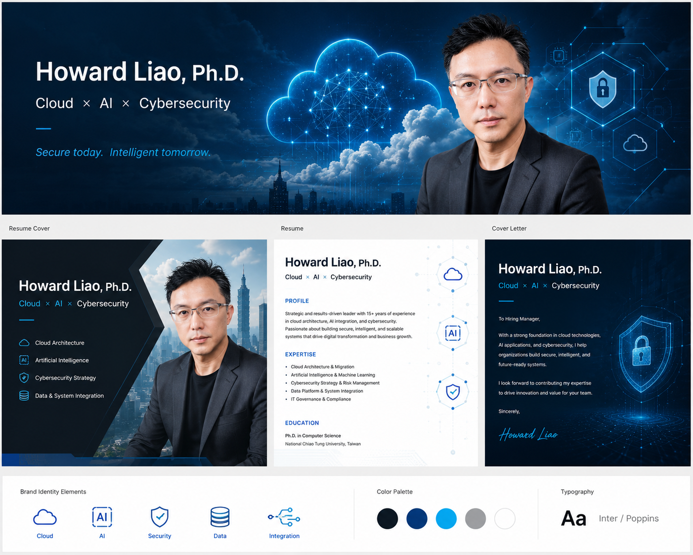
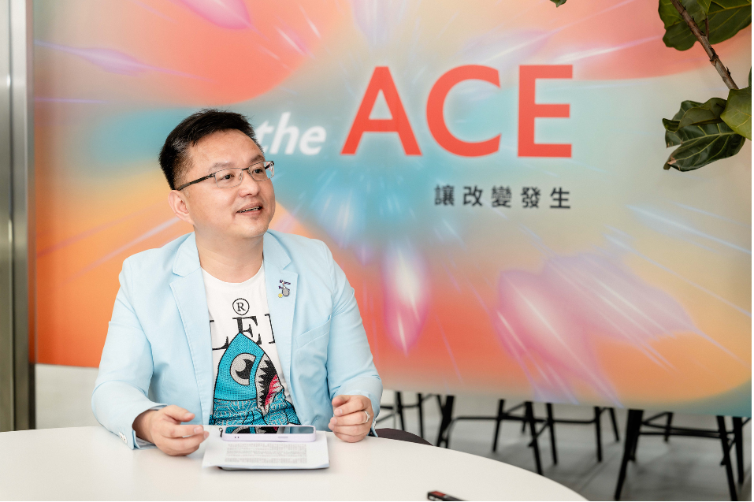
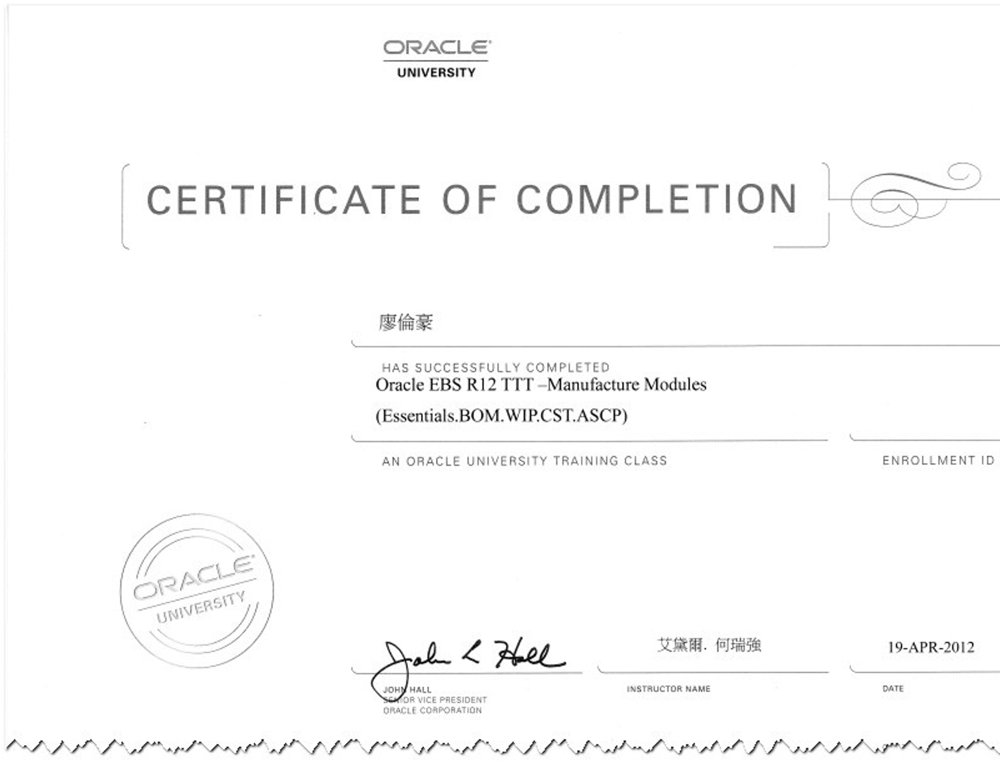
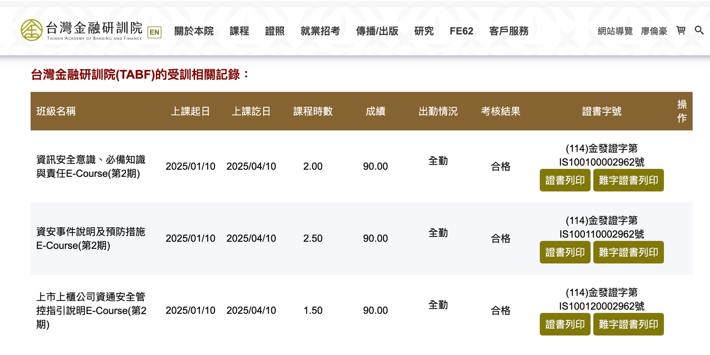

廖倫豪 博士
企業級 AI 雙中樞架構師 ｜ 全球應用治理與高可用雲原生轉型
現任跨國高科技娛樂與網路平台集團技術部副總，統籌高雄、台北、上海研發中心直報 Global CIO。27 年 IT 領導歷練橫跨高科技電子製造、百萬高併發網路平台、美商企業軟體與系統整合。兼具 ISO 27001 資安與 ISO 42001 AI 管理系統標準，專精於 SAP S/4HANA Clean Core、雲原生容器架構（GKE / MongoDB Atlas）、DevSecOps 軟體供應鏈安全與 Edge AIoT 智慧製造。創下 24+ 個月 100% Zero Outage 零重大停機、多雲持有成本降低 30%（Google Cloud APAC 客戶成功案例）與產品良率提升 15% 之量化實績。
四大 C-Level 量化戰情指標
客觀量化實證（STAR/PAR）敘事，經董事會、跨國稽核與原廠成功案例嚴格驗證之真實成果。
跨國 IT、SAP S/4HANA 與外包 SI 顧問年度預算治理（歷史峰值最高達 $14M+）
連續 24+ 個月百萬高併發零停機，GKE 多雲容器與 MongoDB Atlas 跨區高可用
落實 FinOps 多雲資源精準治理與動態容量縮放，年省 30% 基礎設施持有成本
Edge AIoT 千台 SMT 機台串接與機器學習不良預測模型，同時帶動 OEE 提升 18%
三大董事會戰略價值支柱
將高階經營戰略轉譯為可量化之科技執行架構，兼顧創新速度、營運韌性與財務紀律。
商業驅動的數位韌性
(Business Resilience)
超越傳統單點 IT 災防，建構具備極限容錯的高可用架構。將零信任（Zero Trust）與 IEC 62443 工控安全深度融入業務流程，確保全球百萬用戶交易與跨國廠區斷網不停線。
- 連續 24+ 個月 99.99% 關鍵服務 SLA 零重大停機
- IT/OT 網路實體與邏輯隔離，阻斷勒索病毒橫向滲透
- 多廠區邊緣斷線本地暫存佇列（斷網自癒機制）
雲原生與 AI 雙軌治理
(Cloud & AI Governance)
「先串資料、再談 AI」。不動 SAP S/4HANA 核心，透過 API 閘道與 CDC 事件流構建資料湖倉；自研企業級模型網關與 Agent 應用中樞，全面對齊 ISO/IEC 42001 人工智慧治理標準。
- SAP Clean Core 客製代碼減少 35%，標準覆蓋率 90%+
- HowardRoute 模型網關統一治理 250+ 模型，防商業圖紙外洩
- Human-in-the-Loop 關鍵決策人機複核安全閉環
資本效益與全球規模化
(Capital Efficiency)
以 EBITDA、TCO 與 ROIC 為衡量語言，將龐大科技投資轉化為具體經營現金流。導入嚴謹 FinOps 多雲資源治理與跨國 SI 廠商績效卡，實現一次建置、全球多廠標準化複製。
- 跨公有雲與容器架構持有成本（TCO）降低 30%
- 年度 $10M+ IT 預算實施 Run / Grow / Transform 框架
- 新工廠與海外研發中心 4 週內快速完成範本複製上線
π 型複合演進：核心戰略躍升軌跡
製造現場實戰 × 全球極限高可用雲端 × 企業級 AI 雙中樞模型網關之主動式戰略跨越。
【泓晏科技 / 鴻海中央資訊】➜【隆中網絡 6542】
由地端封閉製造巨石單體，躍升至全球百萬高併發彈性多雲原生架構
在泓晏科技主導 Edge AIoT（良率 +15%）與在鴻海中央資訊負責頂層架構後，體會到傳統製造 IT 系統偏向封閉笨重的地端單體（Monolith）。未來的智慧工廠與企業數據中台，必須建立在極度敏捷、全球彈性擴展與秒級容災的雲原生技術體系之上。
主導核心交易與遊戲服務自虛擬機全面遷移至 Google Kubernetes Engine (GKE) 容器化與 MongoDB Atlas 跨區叢集。創下連續 24+ 個月 100% Zero Outage 零重大停機，推動 FinOps 多雲持有成本（TCO）年省 30%，獲 Google Cloud 官方選為 APAC 全球客戶成功案例。
【隆中網絡】➜【跨國網絡科技與娛樂平台集團】
自雲端架構運維，升維至企業專屬生成式 AI 雙中樞與模型網關合規治理
生成式 AI 爆發，多數企業陷入公有 API 呼叫 Token 費用失控、商業機敏圖紙外洩、以及演算法黑箱無審計軌跡的「影子 AI」危機。企業未來的決勝關鍵在於「專有模型網關調度、IP 智財隔離與國際合規標準」。
直報 Global CIO，自研 HowardRoute 智能模型網關（聚合 250+ 模型、動態 Token 路由降本 20~40%）、HowardAGent 應用代理（端到端流程自動化 +55%）、建立 IP Clean Room 智財隔離室。領先業界依據 ISO/IEC 42001 (AIMS) 建立人工智慧管理體系，實證 AI 具體轉化為 EBITDA 效益。
【三大極限洗禮】➜【全球高科技與製造集團】
製造 × 雲端 × AI 治理 終極交會，為全球 50 週年或大型跨國轉型所準備的最佳領航者
面對 AI 伺服器電源、液冷散熱模組與 SAP S/4HANA Clean Core 全球上線挑戰。企業需要的不是純理論學者或單一領域工程師，而是必須兼備：① 懂製造機台與 MES/SAP 現場數據；② 懂全球百萬高併發零停機與 FinOps 降本；③ 懂多模型網關調度與 ISO 42001 合規的複合型領袖。
以「先串資料、再談 AI、不動核心」為鐵律，90 天內提出具備財務假設的 AI 價值地圖；以蜂巢計畫（Project Hive）打通全廠 API 與資料湖倉；讓新廠與新用例按範本快速複製，將每一分 IT 投資精確兌現為毛利與營運資本釋放。
四大核心架構中樞與蜂巢資料底座
不動 SAP 核心、不重造 MES/PLM。站在三大巨石系統旁邊讀取資料、智慧預測，以 API 與事件流提供共用能力。
MCP 工具中樞、Agentic RAG 規範檢索、Human-in-the-Loop 關鍵人機複核
LiteLLM 相容、Smart Routing、Token 級 FinOps 成本治理、毫秒級自動備援
K8s GPU Operator、MIG 虛擬切片、vLLM PagedAttention、私有模型特化微調
Clean Core 攻堅、替代料智能選用、工單齊套料即時預警、AutoML 設備保養
- 基於 MCP (Model Context Protocol) 將 S/4HANA、MES、PLM 封裝為標準唯讀工具。
- Agentic RAG：檢索 IATF 16949 規範、SOP、客戶合約，強制輸出版本號與法規依據。
- 跨部門協同 Agent：HR 履歷初篩、財務帳單對帳、採購多方詢比價。
- 品質 Copilot：SPC 異常原因分析、NCR 初稿與 8D 矯正報告自動編撰。
- ISO 42001 (AIMS)：上線前進行防幻覺、偏差與提示注入（Prompt Injection）評測。
- Human-in-the-Loop：AI 產出嚴格定義為「建議」，寫回 ERP/MES 必須工程師電子簽核。
- 資料最小化：敏感欄位自動脫敏與動態遮罩，機密商業圖面絕不送未授權外部模型。
- ALCOA+ 稽核軌跡：每一次 Agent 呼叫、推理鏈與審核紀錄永久保存。
蜂巢計畫 (Project Hive)：API 整合平台與資料湖倉實施底座
在 SAP S/4HANA Clean Core 之外，接通 MES、PLM、QMS、APS 與現場機台資料，作為全集團 BI 戰情室、批號正反向追溯與 AI 應用的共同底座。
| 湖倉分層 | 資料來源 | 傳輸節奏 | 關鍵職能與商業價值 |
|---|---|---|---|
| Bronze 原始層 | S/4HANA、MES、PLM、機台 | 近即時 (分鐘級) | 不可篡改之原始異動資料，唯一只增不改，作為法規稽核 ALCOA+ 唯一憑證。 |
| Silver 清洗層 | Kafka CDC / MQTT 匯流排 | 1~5 分鐘 | 去重、時間戳統一、料號與批號對齊，防範料號錯置與跨廠規格混淆。 |
| Gold 主題層 | 資料契約與主資料中樞 | 每日 02:00 結算 | 每日營運結算表、批號/序號全生命週期正反追溯表、良率/OEE 與 SPC 管制圖。 |
27 年 IT 領導歷練與任職紀錄
深耕高科技製造、上市櫃數位娛樂、大型電商、外商軟體與系統整合之實戰職涯。
副總 暨 IT Director（直報 Global CIO）— 全球應用治理與交付
- 統籌集團高雄、台北、上海三地研發中心之全球企業應用治理與產品交付，帶領 30 人以上跨職能團隊。
- 制定集團 3 年企業應用地圖，全權治理年度 IT 預算最高 1,000 萬美元（CAPEX/OPEX）與跨國 SI/顧問供應商。
- 主導推動 SAP S/4HANA Clean Core，客製程式碼減少 35%，核心業務標準流程覆蓋率提升至 90% 以上。
- 親自主持架構審查委員會（ARB），訂定 Java／Spring Boot API-first 與 Kafka／EDI／IDoc 跨國整合標準。
- 導入 DevSecOps 品質關卡（SAST/DAST/SBOM）與 AI 輔助程式碼審查，交付 Lead Time 縮短 40%、缺陷逃逸率降低 35%。
IT Director（資訊、資安與資料平台主管）
- 負責集團多雲基礎設施、資訊安全防護與巨量即時資料平台，領導橫跨台灣、中國與海外之技術維運團隊。
- 主導核心服務自傳統虛擬機遷移至 Google Kubernetes Engine (GKE) 容器化與 CI/CD 自動化，發布週期縮短 50%。
- 將核心交易與高併發遊戲資料遷移至 MongoDB Atlas 跨區雙活叢集，支撐海外百萬級玩家即時在線，任內創下連續 24+ 個月 100% Zero Outage 零重大停機。
- 推行嚴謹 FinOps 成本治理，多雲總持有成本（TCO）大幅降低 30%，本專案獲 Google Cloud 官方選為 APAC 全球客戶成功案例並拍攝影音專訪。
- 依 NIST CSF 2.0 建立 ISO 27001 資訊安全管理系統與零信任架構，重大資安事故與 MTTR 降低 30%。
中央資訊 技術處長（系統營運統籌）
- 直報集團中央資訊高階主管，專責全集團架構解決方案選項決策與 SWOT 差距分析。
- 在「業務戰略轉化為技術戰略」方面發揮關鍵樞紐作用，並定義支持戰略落地的端到端技術架構。
- 依據集團全球營運模式與內部業務實況，制定集團數位轉型推動藍圖與進程計畫。
- 統籌跨廠區企業應用與系統架構評審委員會，建立製造 IT 標準化治理範本。
技術／大數據／人工智能部 資深總監（職等 13）
- 主導巨量交易大型電商平台之微服務解耦工程，由傳統單體成功過渡至分散式高可用架構。
- 規劃即時巨量交易數據中樞，支撐雙 11 與大型促銷檔期數十萬 QPS 瞬間峰值流量。
- 落實資料治理與大數據風控邊界，建立內部風控與高可用交易審計日誌。
資訊長 暨 資安長 (CIO / CISO)
- 主導集團多廠區 SAP S/4HANA 導入，堅持以標準功能優先、杜絕過度客製，緊密串接 MES、PLM、APS 打通自訂單到現場工單全流程數據鏈。
- 建置 Edge AIoT 數據中台，涵蓋上千台 SMT 與組裝設備；導入機器學習不良預測與預防保養模型，關鍵產品良率提升 15%、整體設備效率 (OEE) 提升 18%。
- 依 IEC 62443 與 ISO 27001 規劃 OT/IT 網路分段與身分存取控制，杜絕勒索病毒橫向擴散。
- 建立與國際一線品牌客戶的 B2B EDI 供應鏈自動化對接體系。
資訊科技副總 暨 數位轉型總監
- 掌管軟體研發中心、巨量資料應用與數位轉型業務，帶領 50 人以上跨職能敏捷團隊。
- 主導核心系統由傳統單體重構為 Java／Spring Cloud 微服務與 API-first 架構。
- 建立 TDD 測試驅動、SonarQube 靜態分析與 CI/CD 標準管線，新產品交付 Lead Time 縮短 40% 以上。
- 主持大型 B2B 客戶數位平台之架構審查與非功能需求驗收，SLA 維持 99.95% 以上，榮獲國家優秀 IT 經理人案例。
大中華區資深技術經理 / 產品服務負責人
- 負責 Borland 與 Sybase 在大中華區之應用生命週期管理（ALM）與企業資料庫解決方案顧問交付。
- 深入兩岸三地大型金融機構（核心帳務、證券交易）、電信龍頭與高科技製造客戶，主持高併發交易效能調校與 HA/DR 災備架構。
- 主持 30 餘個大型企業系統改造專案，多次受邀擔任大中華區技術年會講師。
資深系統架構師 / 專案經理 (PMP)
- 擔任核心系統架構師與專案經理，承接政府部會、國營事業與金融機構之 J2EE/Java 分散式交易系統與大型入口網站。
- 嚴格依 PMBOK 管理專案範疇、時程、預算與交付風險，帶領 20 人以上跨職能研發團隊，系統可用性達 99.9%。
董事 兼 資訊長 (CIO) 數位公益與 ESG 實踐
- 以企業級雲端技術、資安架構與 AI 專業回饋社會，協助基金會建立「便當童話劇」兒童飲食健康宣導系統。
- 規劃建置公益捐款安全防護網與醫療資訊串接，具體落實企業社會責任（CSR）與 ESG 永續精神。
六大旗艦架構與資安實戰案例
STAR 架構深度剖析：面對極端商業情境、關鍵架構抉擇、可量化商業成果與第三方實體佐證。
跨國百萬高併發手遊平台 GKE 遷移與 Zero Outage
高科技電子製造 Edge AIoT 與不良預測大數據平台
跨國多雲 FinOps 治理與總持有成本縮減 30%
企業專有模型網關與 ISO/IEC 42001 (AIMS) 體系
SAP S/4HANA Clean Core 轉型與客製代碼瘦身
DevSecOps 軟體供應鏈安全與 AI 程式碼審查
媒體專訪、原廠案例與演講出處
公開報導、原廠大會 Keynote、公部門數位課程、國際專業證照與權威學術期刊之完整實體佐證鏈 (共 20 筆公開資料)。
Google Cloud 官方全球客戶成功案例：隆中網絡顛覆全球玩家遊戲體驗
隆中網絡運用 GKE 和 Cloud Load Balancing 升級遊戲體驗。全球遊戲平台運營企業隆中網絡 (GameSparcs) 專注於為玩家帶來創新遊戲體驗，透過 Google Cloud 實現全球玩家高併發低延遲連線與 100% Zero Outage。

CIO Taiwan 雜誌專訪：善用公有雲服務 搶攻全球遊戲商機
專訪報導隆中網絡 IT Director 廖倫豪博士指出，遊戲產業使用雲端服務可帶來降低成本、提高效率、擴大發行範圍與提升玩家體驗四大好處，並建議採用多雲網路 (MCN) 與 Kubernetes 原生架構橫跨公有雲與邊緣運算。

《CIO IT 經理人》封面專題：跨公有雲與邊緣的統一管理實務
深入報導廖倫豪博士如何統籌多雲架構、實施 FinOps 雲端成本監控與治理，以及帶領跨國團隊構建極限高可用（HA）架構的心法。

iThome 專題企劃：運用 MongoDB Atlas 建構遊戲資料管理平台
文／iThome 專題企劃：隆中網絡 IT Director 廖倫豪博士指出，引進 MongoDB Atlas 全託管雲端資料庫平台，兼具高擴展性與 99.995% 高可用性，成功支撐全球跨區高併發讀寫需求，奠定長期競爭力。

MongoDB.local Taipei Keynote 大會主講《運用 MongoDB Atlas 建構全球規模遊戲資料管理平台》
受邀擔任 MongoDB.local 年度旗艦大會 Keynote 演講嘉賓，於台北萬豪酒店大會主舞台發表專題演講，現場獲得逾 500 位企業 IT 領袖與架構師熱烈迴響。

CIO Taiwan 價值學院第十七屆大會 Keynote 演講《洞見機遇-雲端管理與實務》
廖倫豪博士受邀擔任 Keynote 主講人，向與會上市櫃企業 CIO 與 CISO 分享多雲資源治理、安全合規與 FinOps 實務落地心法，現場反應熱烈。

行政院人事行政總處 e等公務園+《洞見機遇-雲端管理與實務》大師講座數位課程
廖倫豪博士受邀擔任行政院大師講座講師，錄製《洞見機遇-雲端管理與實務》數位課程，列入公部門數位學習資源共享平台，推廣公部門雲端轉型與現代化資訊治理思維。

DIGITIMES 科技網報導：MongoDB 8.0 問世，助企業接軌生成式 AI (隆中網絡等企業案例)
DIGITIMES 科技網深度報導 MongoDB 8.0 發表會，提及隆中網絡等企業成功應用案例與演講重點，剖析多模型時代資料庫中台的架構躍遷。

ACE 專案專訪：高可用多雲架構與全球高併發連線營運的極限挑戰
深入探討分散式雲原生架構、跨多區域負載均衡技術與創下連續 24+ 個月 100% Zero Outage 零重大中斷之關鍵工程架構。

BSI 英國標準協會：ISO 27001 資訊安全 & ISO 42001 (AIMS) 人工智慧管理體系
通過 ISO/IEC 27001 資訊安全管理系統與最新 ISO/IEC 42001 人工智慧管理系統（AIMS）專業訓練考試合格，持有人姓名：廖倫豪，具備國際標準雙重治理背書。

Oracle 官方認證與官方認證講師 (OCP & AI Summit Specialist)
持有 Oracle OCP 專業技術證照與 Oracle 官方認證講師授權資格，受邀出席 Oracle AI 高峰會擔任企業大數據與高可用架構專家。

Oracle E-Business Suite R12 供應鏈與製造執行模組官方結業認證
完成 Oracle 原廠 EBS R12 供應鏈管理（SCM）、製造執行與跨系統整合架構之官方高階培訓考核認證。

Oracle AI 技術論壇專題技術講師授權紀錄
受邀擔任 Oracle 官方技術講堂年度講師，向企業界分享大型企業資料庫高併發效能調校、HA/DR 災難復原與 AI 資料庫融合應用架構。

GS1 國際供應鏈條碼管理師專業認證
具備 GS1 國際條碼標準管理師資格，深諳全球供應鏈物流、追溯機制、製造工單批號管制與全球零售 B2B 串接標準規範。

WBSA 行銷企劃師國際專業認證
通過 WBSA 國際商務企劃認證，具備高管商業戰略轉譯、市場競爭分析、SWOT 策略差距推演與產品生命週期全面治理能力。

台灣金融研訓院 金融科技力 (FinTech) 專業能力認證
通過金融研訓院金融科技力專業測驗認證，涵蓋分散式帳本架構、高併發交易結算、金流安全風控防護與金融法遵監理科技。
SCI 期刊論文（共同作者）：Reversible secret-image sharing with high visual quality
發表於 Springer SCI 國際權威期刊，提出具備高視覺品質之可逆秘密影像分享演算法。作者：Ching-Chiuan Lin, Lun-Hao Liao (廖倫豪), Kuo-Feng Hwang, Shih-Chieh Chen。DOI: 10.1007/s11042-012-1190-1。
國際學術期刊論文（第一作者）：Utilizing GIS and GPS in Designing a Trilingual Tourist APP
論文結合地理資訊系統 (GIS) 與全球定位系統 (GPS)，設計具備繁中/英文/日文三語支援之高可用行動服務架構，實踐空間資訊與行動端極限整合。
國家圖書館博碩士學位論文典藏《整合系統的商業自助式入口網站植基於調適性服務導向架構資訊科技治理之研究》
朝陽科技大學 資訊科技管理研究所 博士學位論文，研究生：廖倫豪 (Howard Liao)。結合 ITIL V3 與 SOA 服務導向架構建立企業級入口網站 IT 治理模型，典藏代碼 106IKTC0183002。
財團法人康善基金會 董事兼資訊長 (CIO) 數位公益、便當童話劇與 CSR 永續專案
廖倫豪博士擔任財團法人康善基金會董事兼資訊長 (CIO)，將企業級雲端技術、資安架構與 AI 專長導入醫療健康公益，建置兒童飲食宣導與公益防護網，落實 ESG 永續精神。
學歷、國際期刊論文與專利
嚴謹學術訓練與深厚科研底蘊，將演算法與 IT 治理理論落實於大規模企業實務。
🎓 學歷與論文典藏
博士論文《整合系統的商業自助式入口網站植基於調適性服務導向架構資訊科技治理之研究》，結合 ITIL V3 與 SOA 建立企業入口網站 IT 治理模型，獲國家圖書館臺灣博碩士論文知識加值系統永久典藏。
主修巨量資料探勘（Data Mining）、決策支援系統（DSS）與密碼學。期間擔任衛生署台中醫院「醫療雲端照護」產學合作計畫協同主持人。
📚 國際權威學術論文
論文名稱：Reversible secret-image sharing with high visual quality (DOI: 10.1007/s11042-012-1190-1)。提出具備高視覺品質之可逆秘密影像分享演算法，深獲密碼學與資安界引用。
論文名稱：Utilizing GIS and GPS in Designing a Trilingual Tourist APP。結合地理資訊系統 (GIS) 與全球定位系統 (GPS)，設計具備三語 (ZH/EN/JP) 支援之行動導覽服務架構。
高階面試與董事會預期問答 (FAQ)
針對 CIO、CISO、人資長與董事長關切之核心戰略議題，給予直擊痛點的精闢解答。
第一關 ｜ CIO、技術顧問、人資長
在 S/4HANA 上線切換凍結期（Freeze Period）前，AI 平台只做不涉及 SAP 核心寫入的用例（如研發知識庫、IATF 規範檢索、SPC 預警）。介面一律走外部 API 閘道與 CDC 異動捕獲，杜絕在核心內客製。待 S/4HANA 正式穩定後，直接對接標準 Clean Core API。
任何 AI 用例開始前，必須具備事業群主管（BU PO）簽核、明確的驗收 KPI 與財務科目假設；設立季度 AI 投資委員會，每季嚴格檢視進度，未達商業回報門檻之用例果斷熔斷退場。
模型閘道（如 LiteLLM）、推論引擎（vLLM）與資料湖倉可採用成熟開源或商用方案以加速上線；但涉及企業核心的資料契約、替代料推演模型與提示工程，必須由內部團隊掌握，確保自主掌控權與最低 TCO。
第二關 ｜ 董事長、總裁與經管會
依過往實績：智慧製造不良預測帶動良率提升 15%、多雲 FinOps 降低 30% 基礎設施費用、工單齊套料預警釋放數億元呆滯營運資金。到任 90 天內提出經財務長覆核確認的詳細財務模型。
各事業群均有自主維護的資料產品；海外新廠一上線即自帶預測與追溯能力；員工將 AI 視為標準日常協同工具；全集團在 ISO 27001 與 42001 標準下穩健運轉，兼顧創新速度與法規安全。
我兼具製造現場實戰（泓晏/鴻海）、全球極限高可用雲端零停機（隆中/Google Cloud 案例）與企業專有模型網關合規落地（ISO 42001）。能親手寫架構、也能用董事會聽得懂的 EBITDA 經營指標對話。
到任 180 天落實藍圖與到任指標
傾聽、定向、首批交付到全面擴展，嚴格對齊 ERP 切換與海外新廠投產節奏。
傾聽與現況盤點
- 訪談 CIO、財務長與事業群高階主管
- 清查影子 AI、既有資料庫與機台連網現況
- 確認 S/4HANA 切換時程與介接點
定向與架構選型
- 以效益 × 可行性 × 可重用評估用例組合
- 比較原生/雲端/地端三路線 TCO 成本
- 組建跨職能 AI 組織與人才梯隊
首批成果與 MVP
- 啟動蜂巢資料底座與模型網關 MVP
- 上線 2 個快速勝利用例（知識庫/OCR）
- 發布集團 AI 使用規範與資料分級
全面擴展與複製
- 平台對齊 S/4HANA 標準 API 正式投產
- A 級製造預測用例進駐示範廠試點
- 開設 PO 學院第一梯次（培育 30 位 PO）